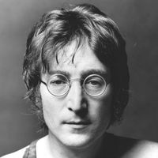
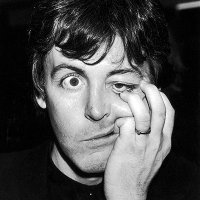
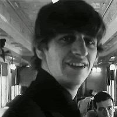
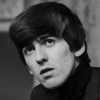

Integrantes
John Lennon
Fue un artista, músico multiinstrumentista, poeta, dibujante, actor, pacifista y compositor británico que saltó a la fama como uno de los miembros fundadores de The Beatles, reconocida como la banda más comercialmente exitosa y críticamente aclamada en la historia de la música popular. Junto con Paul McCartney, formó una de las parejas de compositores más exitosas del siglo xx.
Paul Mccartney
Es un cantautor, multiinstrumentista, y compositor británico. Ganó fama mundial por ser el bajista de la banda de rock The Beatles, reconocida como la más popular e influyente en la historia de la música popular; su asociación compositora con Lennon es una de las más célebres del siglo xx. Después de la separación de la banda, continuó su carrera musical en solitario y formó Wings con su primera esposa, Linda, y Denny Laine.
Ringo Starr
Es un músico, cantante, compositor y actor británico que fue el baterista de la banda musical The Beatles. Antes de formar parte de The Beatles, Starr fue miembro de otra banda de Liverpool, Rory Storm & The Hurricanes. En agosto de 1962, Pete Best fue despedido y Ringo ocupó su lugar.
George Harrison
Fue un músico multiinstrumentista, compositor, cantante, productor musical y productor cinematográfico británico, guitarrista de la banda The Beatles. Aunque John Lennon y Paul McCartney fueron los principales compositores dentro del grupo, Harrison también incluyó composiciones propias en los discos de The Beatles.
Discografía
- Please Please Me (1963)
- With The Beatles (1963)
- A Hard Day's Night (1964)
- Beatles For Sale (1964)
- Help! (1965)
- Rubber Soul (1965)
- Revolver (1966)
- Sgt.Pepper's Lonely Hearts Club Band (1967)
- Magical Mystery Tour (1967)
- The Beatles (1968)
- Yellow Submarine (1969)
- Abbey Road (1969)
- Let It Be (1970)